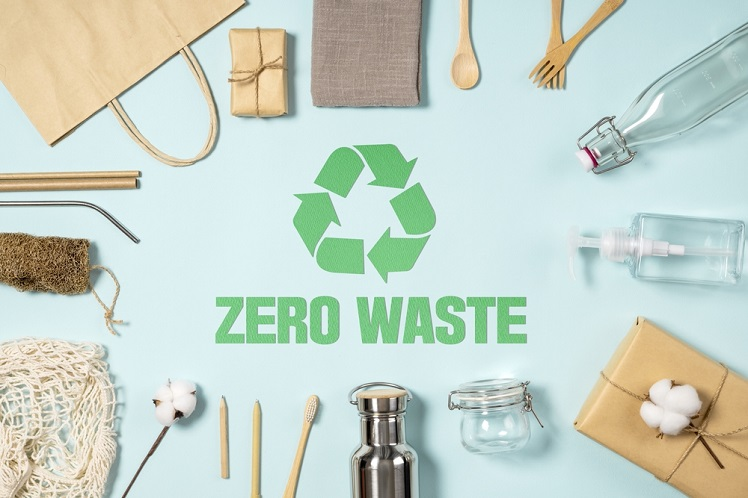
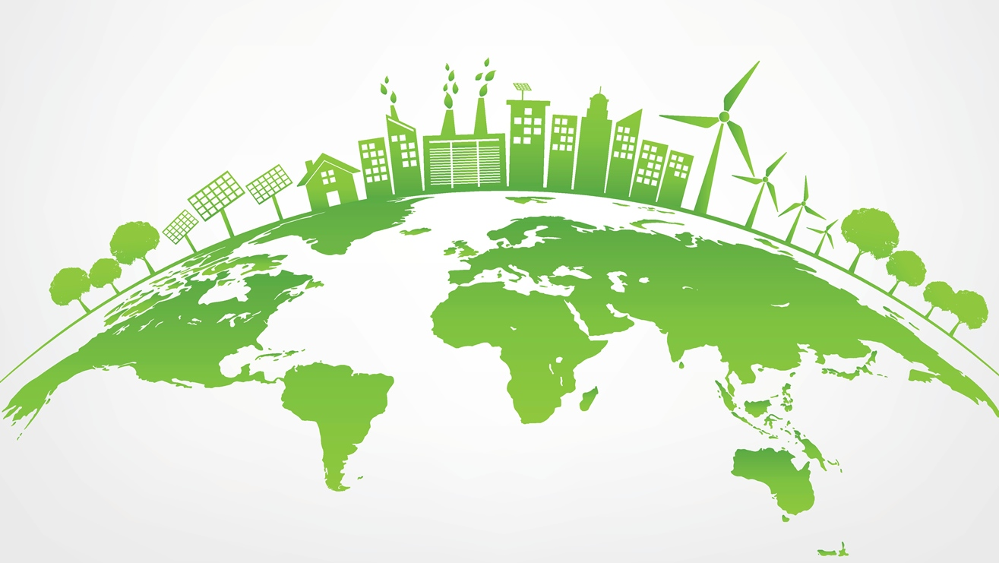

Services
Energy Efficiency
-
Waste Management
Sustainable waste management relies on the waste management hierarchy, a system that focuses on avoidance, reduction, reuse, recycling, energy recovery, and finally, treatment or disposal. It aims to prioritize actions for the most efficient use of resources, placing renewable and less wasteful practices at the top of the pyramid. Here, we look at how the waste management hierarchy is central to sustainable waste management..
-
Avoidance and reduction
Sustainable Living Tips
-
At Conservation International, we're working hard to protect nature — but we can't do it alone. While we need drastic and immediate action by governments and industries on a global scale, individual action is essential — and it adds up to major improvements for the planet. .
-
Refresh your air filters Clean — by vacuuming or rinsing with water — or replace your HVAC filters every three months. Your heater or air conditioning will blow more efficiently and draw less power.
Switch to rechargeable batteries Are you still using old-fashioned, single-use, alkaline batteries in devices like your TV's remote control? Try rechargeable batteries instead. You'll save money over time and help cut down on the billions of dollars worth of batteries sold each year in the United States, most of which never see a recycling facility. And for dead batteries collecting dust in your drawer: Drop them off at a local recycling that accepts them (be sure to check regulations and restrictions first). Just don't toss them in the trash!
Dine in instead of eating out Most of the energy used by the average restaurant goes toward things like sanitation, refrigeration and lighting, while only 35% goes toward preparing your meal. Cut some fat from your carbon footprint — and save a bit of money — by eating at home instead.
Grow it yourself Get your hands dirty and try growing some of your own herbs, fruits and vegetables. The more you can avoid the grocery store, the more you'll help reduce emissions related to shipping and refrigerating all of that food. And if you don't have a backyard, don't fret: Many food items, from scallions to celery to herbs, can be grown on your windowsill.
Compost your food scraps Trashed food ends up in a landfill, where it rots and emits methane — a powerful greenhouse gas that contributes more to global warming than CO2. Toss your leftovers in a compost bin instead. They'll emit no methane, and you'll reduce the energy needed to haul your garbage to the dump. And if you're a gardener, adding compost to your soil will enrich it while increasing moisture retention, reducing the amount of watering you'll need to do.
-
Sustainable products
- Zero Waste Shopping Gear
- Ethical Personal Accessories
- Planet Friendly Pet Accessories 
- Reusable Beverage Containers and Accessories
- Low Impact Picnic, Camping and Travel Products
- Eco Friendly Home Items
- Sustainable Clothing and Shoes
Energy efficiency simply means using less energy to perform the same task - that is, eliminating energy waste. Energy efficiency brings a variety of benefits: reducing greenhouse gas emissions, reducing demand for energy imports, and lowering our costs on a household and economy-wide level. While renewable energy technologies also help accomplish these objectives, improving energy efficiency is the cheapest - and often the most immediate - way to reduce the use of fossil fuels. There are enormous opportunities for efficiency improvements in every sector of the economy, whether it is buildings, transportation, industry, or energy generation.
Energy Generation and Distribution Combined heat and power systems capture the "waste" heat from power plants and use it to provide heating, cooling, and/or hot water to nearby buildings and facilities. This increases the energy efficiency of power generation from approximately 33 percent to up to 80 percent. The smart grid is another system that will improve the efficiency of electric generation, distribution, and consumption. Community Design.

Avoiding and reducing the amount of waste generated is the first priority. This can be achieved by maximizing efficiency and reducing consumption. First, businesses and individuals should choose products that require the fewest resources to produce (including the packaging). Additionally, single-use or disposable goods should be avoided wherever possible— these materials are the embodiment of linear waste in which resources are extracted, processed, and distributed only to quickly become waste

Furniture made with recycled or reclaimed wood. Electronics made with recycled materials and energy efficient components. Renewable energy sources, such as solar or wind power. Green building materials, such as low-VOC paints and recycled insulation.
Green intiatives
Green sustainability improves our living quality and protects our ecosystem. It is important and relevant for organizations of all sizes or industries. As social awareness regarding the need for green solutions increases, organizations can undertake several green initiatives to reduce their negative impact on the environment. These include using organic cleaning products, reducing the use of paper, using eco-friendly products, and using energy-saving equipment.
The main purpose of green initiatives is to deliver economic potential by natural assets on a sustainable basis. Green sustainability allows organizations to address different economic and environmental issues. It also paves the way for growth in different areas, including:
Productivity: Green incentives and the use of natural resources increases productivity.
Innovation: Green incentives allow more opportunities for innovation, stimulating new ways of handling environmental problems.
New markets: Green incentives create new markets because of the increase in the demand for green technologies, services, and goods. This also increases job opportunities.
